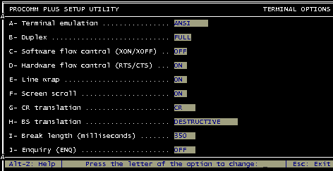
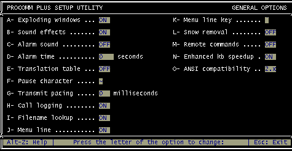

Projet — Micro-contrôleurs 8051
Programmateur de 8051 et EPROM
Réalisation d'un programmateur de µC de la famille 8051 et d'EPROM 2764-27512, construit autour d'un 87C51FA.
Le logiciel
Le code source complet est reproduit ci-dessous. Les fichiers complémentaires (source, documentation) sont disponibles sur la 📁 page de téléchargement.
Ce logiciel implanté dans l'EPROM du 87C51FA est développé en langage C et compilé à
l'aide du compilateur C51 de 'Keil Elektronik'. Evidemment, un autre compilateur peut
convenir avec peut être quelques légères adaptations de syntaxe. L'avantage du C n'est
plus a démontrer, vous pouvez juger de sa simplicité, en lisant le listing, quand il
est utilisé avec des micro-contrôleurs.
Outre la programmation des composants, le logiciel se charge de communiquer avec le PC
(via la RS232). Le soft utilisé sur le terminal est 'PROCOMM PLUS'. 'Hyperterminal' de
Windows ne convient pas car il ne gère pas convenablement le flux lors du transfert de
fichiers vers le programmateur. En effet, il y a risque de perdre des caractères même
(et c'est le cas) quand le programmateur contrôle le flux hard.
Sur la version DOS (ou windows) de Procomm, il convient de configurer ainsi (Alt S)
pour obtenir un affichage correct:
Terminal options:

General options:
Le logiciel dialogue avec le terminal de 1200 à 19200 bds. Il attend au démarrage que l'utilisateur frappe au clavier le caractère 'espace' pour afficher le menu. LES FONCTIONS: La fonction main() initialise les variables et le hard. Elle lit la config. dans l'EEPROM II2C, recherche la vitesse de la liaison série et traite après l'avoir affiché les options du menu. - Programmation - Test de virginité - Lecture - Somme de contrôle - Vérification - Efface mémoire Flash - Choix autre composant. La librairies de composants: Chaque composant est défini par sa marque, sa référence et ses paramètres de programmation. La liste des marques est contenue dans le tableau tab_fab[]. Il peut être complété par d'autres marques en prenant soin de modifier le nombre de marques dans nb_fab (max 255). La structure du modèle 'library' regroupe la collection des composants. Le nombre d'éléments est précisé par 'nb_composant' (max 65535). Pour ajouter un nouveau composant il suffit donc (si nécessaire) d'ajouter sa marque dans 'tab_fab', et d'incrémenter 'nb_fab'. Puis d'ajouter les éléments définissant le nouveau composant dans 'tab_lib'. 1 octet =fabricant (0=Atmel .. n=X) 1 octet = type algorithme initialisation 1 octet = type algorithme programmation 1 octet = type algorithme verification et lecture 1 octet = nombre d'impulsions pour programmer un octet 1 octet = nombre de cycles pour programmer un octet 1 octet = valeur de V_CAN = ((Vpp*3.3)/36.3)*100) 1 octet = valeur de V_CAN = ((Vcc* 3.3)/13.3)*100) 1 octet = duree d'une impulsion (X*100 µS) 1 octet = Taille en Ko n octets=nom du composant Pour finir, incrémenter 'nb_composant'. Ne pas oublier qu'en 'C', l'indice 0 (zéro) d'un tableau pointe sur le premier élément. Les algorithmes de programmation: Les algorithmes permettant de programmer et de lire les composants ont été décomposés en trois modèles (ou types): - algorithme d'initialisation 'init_X' - algorithme de programmation 'prog_X' - algorithme de lecture et vérification 'verif_lect_X' Ce qui permet d'obtenir des petites fonctions qu'il est aisé de créer si un nouveau composant (à ajouter) utilise d'autres algorithmes. A titre d'exemple (NM27C512), si 'algo_init' (type algorithme initialisation) = 3, algo_prog = 2 et algo_verif = 2 alors, le programme fera appel aux fonctions: - init_3 - prog_2 - verif_lect_2 S'IL EST NECESSAIRE DE FAIRE EVOLUER LE LOGICIEL: Modifier: initialisation() verif_lecture() prog_octet() Ajouter : init_X() prog_X() verif_lect_X() Algo Fonctions Composants 0 init_0() : 8051 1 init_1() : 2764,27128 2 init_2() : 27256 3 init_3() : 27512 0 prog_0() : 8051 1 prog_1() : 2764,27128 2 prog_2() : 27256,27512 0 verif_lect_0 : 8051 1 verif_lect_1 : 2764,27128,27256 2 verif_lect_2 : 27512 Fonctions II2C start(): génère un START sur le bus IIC stop() : génère un STOP sur le bus IIC emi_ack(): Emission d'un accusé réception vers l'EEPROM rec_ack(): Attend un accusé réception de l'EEPROM ecrit_octet_IIC: Ecrit un octet (donnee) dans l'EEPROM lect_octet_IIC: Lecture d'un octet à l'adresse courante. ecriture_IIC: Ecriture à l'@ X de N octets lus dans le buffer[] lecture_IIC: Lecture à l'@ X de N octets et stocke dans buffer[] Avantage du 'C' vous pouvez utiliser ces fonctions pour piloter en master un bus II2C avec un PIC par exemple.Le programme (code source complet)
/*************************************************************************** * PROGRAMMATEUR Universel de Micro-controleurs * * de la famille 8051 et d'EPROM (2764 à 27512) * * * * * * C.DRESCHEL - avec la collaboration de JC. DENIS * * PROGUNIV4.C V4.00 * * * * Version comprenant la reconnaissance automatique de la vitesse * * de la liaison série et la mémorisation dans l'EEPROM du dernier * * composant utilisé. * ****************************************************************************/ #include <reg51f.h> #include <intrins.h> #include <ctype.h> #include <stdio.h> /*************************************************************************** Configuration Hard ****************************************************************************/ #define PORT_DATA P0 #define ADR_VOLT P1 sbit Adr_bas= P2^0; sbit Adr_haut= P2^1; sbit DA1= P2^2; sbit DA2= P3^5; sbit CTS= P3^4; sbit Prog= P2^3; sbit P2_6= P2^4; sbit P2_7_OE= P2^5; sbit P3_6_SCL= P2^6; sbit P3_7_SDA = P3^2; /********************************************************************** Librairie des composants et fabricants. ajouter vos nouveaux composants à la suite dans 'tab_lib[]' 1 octet =fabricant (0=Atmel .. n=X) 1 octet = type algorithme initialisation 1 octet = type algorithme programmation 1 octet = type algorithme verification et lecture 1 octet = nombre d'impulsions pour programmer un octet 1 octet = nombre de cycles pour programmer un octet 1 octet = valeur de V_CAN = ((Vpp*3.3)/36.3)*100) 1 octet = valeur de V_CAN = ((Vcc* 3.3)/13.3)*100) 1 octet = duree d'une impulsion (X*100 µS) 1 octet = Taille en Ko n octets=nom du composant **********************************************************************/ code unsigned char nb_fab=7; code unsigned char *tab_fab[]={"Atmel","Fujitsu","Intel","National", "Nec","Philips","SGS-Thomson"}; code unsigned int nb_composant=15; code struct library{ unsigned char fab; unsigned char algo_init; unsigned char algo_prog; unsigned char algo_verif; unsigned char nb_pulse; unsigned char nb_cycle; unsigned char vpp; unsigned char vcc; unsigned char nb_100; unsigned char taille; unsigned char *nom; } tab_lib[]={ 0,0,0,0,1,1,109,124,1,4,"AT89C51_12V", /*12V 5V 100µS */ 0,0,0,0,1,1,45,124,1,4,"AT89C51_5V", /*5V 5V 100µS */ 0,0,0,0,25,1,109,124,1,8,"AT89C52", /*12V 5V 100µS */ 1,2,2,1,1,25,118,148,5,32,"MB27C256A", /* 13V 6V 500µS */ 2,1,1,1,1,25,113,148,1,8,"D2764A", /* 12.5V 6V 100µS */ 3,1,1,1,1,20,118,148,5,8,"NM27C64", /* 13V 6V 500µS */ 3,2,2,1,1,20,115,155,1,32,"NM27C256", /* 12.75V 6.25V 100µS */ 3,3,2,2,1,25,115,155,1,64,"NM27C512", /* 12.75V 6.25V 100µS */ 4,1,1,1,1,25,190,124,10,8,"D2764D", /* 21V 5V 1mS */ 4,1,1,1,1,25,190,148,10,16,"D27128D", /* 21V 6V 1mS */ 4,3,2,2,1,25,113,148,1,64,"D27C512D", /* 12.5V 6V 100µS */ 5,0,0,0,25,1,115,124,1,8,"87C52", /* 12.75V 5V 100µS */ 5,0,0,0,25,1,115,124,1,4,"SC87C51CGF40", /* 12.75V 5V 100µS */ 5,0,0,0,25,1,115,124,1,8,"S87C51FA", /* 12.75V 5V 100µS */ 6,2,2,1,1,25,115,155,1,32,"M27C256B"}; /* 12.75V 6.25V 100µS */ code unsigned char vitesse[4]={0x0E8,0x0F4,0x0FA,0xFD}; /* param. RS232 */ /*********************************************************************** Prototypes des fonctions ************************************************************************/ void fichier_hex_in(void); void put_char(char c); char get_char(void); void put_string(char table[]); void rec_serie(void); void compte(void); void init_timer0(void); void curseur(unsigned char direction,unsigned char nombre); void X_cent_microS(unsigned char X); void affiche_erreur(void); unsigned char lecture_donnee (void); unsigned char choix_fabricant(void); void choix_composant(unsigned char indice_fab); void menu(void); void init_zero_volt(void); void init_0(void); void init_1(void); void init_2(void); void init_3(void); void prog_0(void); void prog_1(void); void prog_2(void); unsigned char verif_lect_0(void); unsigned char verif_lect_1(void); unsigned char verif_lect_2(void); void dix_microS(void); void vcc_tension(unsigned char tension); void vpp_tension(unsigned char tension); void place_adresse(unsigned int adr); void aff_en_place(void); bit memoire_vierge(void); void test_virginite(void); void initialisation(void); unsigned char verif_lecture(void); void programmation(void); void prog_ligne(unsigned int adr_debut,unsigned char nb_donnee); void prog_octet(void); void verification(void); void lecture(void); void somme_controle(void); void sauve_octet_faux(unsigned char x); void aff_octet_faux(void); void efface(void); void aff_titre(void); void cherche_vitesse(void); void ecrit_octet_IIC(void); bit attend_ack(void); void emi_ack(void); unsigned char lect_octet_IIC(void); void lecture_IIC(unsigned char adr,unsigned char nb_octet); void ecriture_IIC(unsigned char adr,unsigned char nb_octet); void lecture_config(void); void init_table(); /*********************************************************************** Variables globales ***********************************************************************/ unsigned char buffer[16]; unsigned char type_erreur, clock, indice_fab, vcc,vpp, nb_pulse,nb_100,taille, prog_n,init_n, nb_cycle,verif_n; unsigned int indice_comp,adresse,adr_fin; bit emi_ok, rs232_ok, flag_erreur, time_out, mode,fin_fichier; unsigned char bdata donnee; sbit bit_7=donnee^7; sbit bit_0=donnee^0; /********************************************************************** Constantes **********************************************************************/ #define VCC_5V 124 #define VPP_5V 45 #define IIC_adr_lect 0xA1 /*1010 0001 adresse EEPROM en lecture*/ #define IIC_adr_ecrit 0xA0 /*1010 0000 adresse EEPROM en écriture*/ /*********************************************************************** Programme principal. mode=0: mode programmation. mode=1: mode lecture et vérification. ***********************************************************************/ main() { unsigned char car; CTS=0; /* ligne CTS active */ init_zero_volt(); /* toutes les tensions à zéro */ lecture_config(); /* lecture du dernier composant utilisé */ init_zero_volt(); cherche_vitesse(); /* cherche la vitesse de la liaison série */ do{ menu(); car=get_char(); switch (car) { case '0': programmation(); break; case '1': mode=1; test_virginite(); break; case '2': mode=1; lecture(); break; case '3': mode=1; somme_controle(); break; case '4': mode=1; verification(); break; case '5': efface(); break; case '6': indice_fab = choix_fabricant(); choix_composant(indice_fab); break; default: break; } }while(!0); } /************************************************************************ Fonction aff_titre(): Affiche le titre 'PROGRAMMATEUR UNIVERSEL' ************************************************************************/ void aff_titre(void) { unsigned char x; put_string("\t\t"); put_char(201); for(x=0;x<36;x++) put_char(205); put_char(187); put_string("\r\n\t\t"); put_char(186); put_string("\tPROGRAMMATEUR UNIVERSEL "); put_char(186); put_string("\r\n\t\t"); put_char(200); for(x=0;x<36;x++)put_char(205); put_char(188); } /************************************************************************ Fonction lecture_config() Lecture dans l'EEPROM à l'adresse 0 de 3 octets. Les octets sont stockés dans le buffer[]. l'octet 'donnes valides' en buffer[0] l'indice du composant en buffer[1..2] Si octet 'buffer[0]' est <> 1 affiche la liste de marques et composants de la marque. ************************************************************************/ void lecture_config(void) { lecture_IIC(0,3); if(buffer[0]==1) { indice_comp=buffer[2]; /* poids fort */ indice_comp <<=8; indice_comp=buffer[1]; /* poids faible */ init_table(); /* initialise les variables */ } if((indice_comp>nb_composant) && (buffer[0]==1)) { indice_fab = choix_fabricant(); /* renvoie l'indice du fabricant */ choix_composant(indice_fab); /* choix du composant */ } } /************************************************************************ choix_fabricant() Affiche la liste des fabricants et retourne le choix sous la forme de son indice dans le tableau des fabricants. i = indice du tableau fabricants p = numéro de ligne ('0'..'9') n = indice de debut de page. ************************************************************************/ unsigned char choix_fabricant(void) { unsigned char i,p,n,tempo,car; bit digit,fin_aff; i=0; fin_aff=0; do { p=0; n=i; put_string("\x1B[2J"); aff_titre(); put_string("\r\n\n\n\n\n"); put_string("\t\tMarques:"); put_string("\r\n\n"); /* affiche une liste de 10 marques */ for (i=n ; ((i < nb_fab) && (i < (n+10))); i++) { put_string("\t\t"); put_char(p+48); put_char(':'); put_char(' '); put_string(tab_fab[i]); put_char(0x0D); put_char(0x0A); p++; } if (i < nb_fab) put_string("Espace > suite\r\n"); put_string("\n\t\tChoix:"); do { car=get_char(); digit=isdigit(car); }while((digit != 1) && (car != 0x20)); tempo=car; if(digit==1) { car -= 48; n += car; if(n < i) /* valeur <= valeur affichée */ { fin_aff=1; /* alors valide */ } } if (i == nb_fab) i = 0; /* si fin de liste retour au début */ }while(fin_aff == 0); put_char(tempo); while((car=get_char()) != 0x0D); return(n); } /************************************************************************ Fonction choix_composant(indice fabricant) Affiche la liste des composants ayant fab=indice fabricant. par liste de 10 composants (ou moins). i = indice du tableau composants p = numéro de ligne ('0'..'9') n = indice de début de liste. compte_aff= nombre de composants affichés. ************************************************************************/ void choix_composant(unsigned char indice_fab) { unsigned char p,car,tempo,compte,comp_aff; unsigned int i,n; bit digit,fin_aff; /* Cette partie compte le nombre de composants de la marque choisie */ compte=0; for (i=0; i < nb_composant; i++) { if (tab_lib[i].fab==indice_fab) compte++; } i=0; comp_aff=0; fin_aff=0; do { p=0; n=i; put_string("\x1B[2J"); aff_titre(); put_string("\r\n\n\n\n\n"); put_string("\t\tComposants "); put_string(tab_fab[indice_fab]); put_string("\r\n\n"); /* cette partie affiche une liste de 10 composants */ for (i=n ; ((i < nb_composant) && ( p < 10)); i++) { if (tab_lib[i].fab==indice_fab) { comp_aff++; put_string("\t\t"); put_char(p+48); put_char(':'); put_char(' '); put_string(tab_lib[i].nom); put_char(0x0D); put_char(0x0A); p++; } } if (compte > 10) put_string("\t\tEspace > suite\r\n"); put_string("\n\t\tChoix:"); do { car=get_char(); digit=isdigit(car); }while((digit != 1) && (car != 0x20)); tempo=car; if(digit==1) /* valeur saisie entre '0' et '9' */ { car -= 48; if(car < p) /* valeur saisie < valeur affichée */ { fin_aff=1; } } if (comp_aff == compte) /* si fin de liste */ { i = 0; comp_aff = 0; } }while(fin_aff == 0); put_char(tempo); while((tempo = get_char()) != 0x0D); /* attend un CR */ p=0x0FF; i=n; do { if (tab_lib[i].fab == indice_fab) p++; /* cherche l'indice réel */ i++; /* dans la table composants*/ }while ( car != p ); /* à partir de l'indice de */ i--; /* début de liste n */ indice_comp=i; /* mémorise l'indice du composant */ init_table(); /* initialise les variables */ buffer[0]=1; /* valide les données de l'EEPROM */ buffer[1]=i; /* l'écriture dans l'EEPROM */ i >>=8; /* de l'indice du composant */ buffer[2]=i; ecriture_IIC(0,3); /* écriture à l'adresse 0 de 3 octets */ } /************************************************************************ Fonction init_table() Aprés avoir lu dans l'EEPROM l'indice de la bibliothèque de composant, cette fonction initialise les variables globales. ************************************************************************/ void init_table(void) { vcc=tab_lib[indice_comp].vcc; vpp=tab_lib[indice_comp].vpp; init_n=tab_lib[indice_comp].algo_init; prog_n=tab_lib[indice_comp].algo_prog; verif_n=tab_lib[indice_comp].algo_verif; nb_pulse=tab_lib[indice_comp].nb_pulse; nb_cycle=tab_lib[indice_comp].nb_cycle; taille=tab_lib[indice_comp].taille; nb_100=tab_lib[indice_comp].nb_100; } /************************************************************************ Fonction menu() Efface l'écran, affiche le nom du composant et le menu à options ************************************************************************/ void menu(void) { put_string("\x1B[2J"); aff_titre(); put_string("\r\n\n\n\n\n"); /*put_string("\x1B[5;1H");*/ put_string("\t\t"); put_string(tab_fab[tab_lib[indice_comp].fab]); put_char(':'); put_char(' '); put_string(tab_lib[indice_comp].nom); put_string("\r\n\n"); put_string("\t\t0: Programmation.\r\n"); put_string("\t\t1: Test de virginité.\r\n"); put_string("\t\t2: Lecture.\r\n"); put_string("\t\t3: Somme de contrôle.\r\n"); put_string("\t\t4: Vérification.\r\n"); put_string("\t\t5: Effacement mémoire Flash.\r\n"); put_string("\t\t6: Autres composants.\r\n\n"); put_string("\t\tChoix:"); } /************************************************************************ Routines liaison Serie: Put_char: Emission d'un caractere get_char: Reception d'un caractere put_string: Emission d'une chaine de caracteres recherche_vitesse: De 1200 à 19200 bds, attend un 'Espace' pour se connecter à la vitesse du terminal. **************************************************************************/ void put_char(char c) { while(!emi_ok); emi_ok=0; SBUF = c; } char get_char(void) { while(!rs232_ok && !time_out); rs232_ok=0; return (SBUF); } void put_string(char table[]) { unsigned char p; p=0; /* pointe le 1er caractere */ while (table[p] != 0) /* jusqu'au dernier=0 */ { put_char(table[p]); p++; } } void rec_serie(void) interrupt 4 { /* Interruption 23h */ if(!RI) { /* si RI=0 */ TI=0; emi_ok=1; } else{ RI=0; rs232_ok=1; } } void cherche_vitesse(void) { unsigned char car,x; bit fin_recherche; CTS=0; /* ligne CTS active */ TMOD=0x21; /* 8 bits autoload */ SCON=0x50; IE=0x92; /* valide interrupt EA,ES,T0 */ IP=0x12; /* PS=1 PT0=1 */ TI=1; car=0; init_timer0(); do { TR1=0; fin_recherche=0; TH1=0xFD; TL1=0xFD; PCON |=128; /* 19200 Bds SMOD=1 */ rs232_ok=0; car=0; clock=25; /* 0,25 seconde d'attente */ time_out=0; TR1=1; /* Timer1 On */ TR0=1; /* Timer0 On */ car=get_char(); /* Attend un Espace */ TR0=0; time_out=0; if(car==0x20) fin_recherche=1; /* si reçu 'Espace' alors fin */ if (fin_recherche==0) { for(x=0;x<5;x++) { TR1=0; PCON &=0x7F; /* <=9600 bds SMOD=0 */ TH1=vitesse[x]; TL1=TH1; clock=15; /* 1 S d'attente */ time_out=0; rs232_ok=0; car=0; TR1=1; /* Timer1 On */ X_cent_microS(1); TR0=1; /* Timer0 On */ car=get_char(); TR0=0; /* Timer0 Off */ time_out=0; if(car==0x20) /* si reçu Espace */ { fin_recherche=1; x=5; /* fin de la recherche */ } } } }while(fin_recherche==0); } /*************************************************************************** Fonction compte(): Appel par l'interruption du timer 0. Cette fonction positionne à '1' les drapeaux 'Time_out'et 'flag_erreur' quand clock est égal à 30 (environ 2 secondes). Fonction init_timer0(): initialise le Timer0 ***************************************************************************/ void compte(void) interrupt 1 { clock++; if(clock == 30) /* 2 s */ { flag_erreur=1; time_out=1; } } void init_timer0(void) { time_out=0; clock=0; TH0=0; TL0=0; TR0=1; } /************************************************************************** Fonction X_100_microS Execute une boucle d'attente de X fois 100µS (100 µS à 25.5 mS) **************************************************************************/ void X_cent_microS(unsigned char X) { unsigned char fois; do { fois=21; while(--fois); }while (--X); } /************************************************************************** Fonction dix_microS Execute une boucle d'attente de 10 µS **************************************************************************/ void dix_microS(void) { unsigned char fois; fois=1; while(--fois); } /************************************************************************** Fonctions aff_en_place(): affichage le message "Mettre le composant..." **************************************************************************/ void aff_en_place(void) { unsigned char car; put_string("\x1B[2J"); put_string("\x1B[5;1H"); put_string("Mettre le composant en place"); put_string("\r\nAppuyer sur une touche"); car=get_char(); } /************************************************************************** Fonction memoire_vierge() test si tous les octets de la mémoire sont égaux à FF vierge = 1 si vierge vierge = 0 si non vierge **************************************************************************/ bit memoire_vierge(void) { unsigned int adresse; unsigned char donnee; bit vierge; put_string("\r\nTest de viginité en cours"); adr_fin=(taille*1024)-1; /* taille en Ko - 1 */ vierge=1; adresse=0xFFFF; /* FFFF+1=0000 */ do { adresse++; place_adresse(adresse); donnee=verif_lecture(); if(donnee != 0xFF) vierge=0; /* si donnee <> FF => non vierge */ }while((adresse<adr_fin) && (vierge)); return(vierge); } /************************************************************************** Fonctions attention(): affichage le message "Attention: ...Mettre le composant..." **************************************************************************/ void attention(void) { unsigned char car; put_string("\x1B[2J"); put_string("\x1B[5;1H"); put_string("ATTENTION: Mémoires Flash uniquement !\r\n\n"); put_string("Mettre le composant en place"); put_string("\r\nAppuyer sur une touche"); car=get_char(); } /************************************************************************* Fonction efface() Efface les memoires FLASH des 89C51 a l'aide d'une impulsion de 10 mS *************************************************************************/ void efface(void) { attention(); Prog=1; P2_6=1; P2_7_OE=0; P3_6_SCL=0; P3_7_SDA=0; vcc_tension(vcc); vpp_tension(vpp); X_cent_microS(100); /* permet au micro de s'initialiser */ Prog=0; X_cent_microS(100); /* une seule impulsion de 10mS */ Prog=1; init_zero_volt(); /* toutes les tensions à zero */ } /************************************************************************** Fonction test_virginite(void) Initialise les tensions et lignes de contrôle puis appel la fonction memoire_vierge(). Le résultat résultat du test est affiché. **************************************************************************/ void test_virginite(void) { unsigned char car; aff_en_place(); initialisation(); if(memoire_vierge()) { put_string("\r\nCOMPOSANT VIERGE"); }else { put_string("\r\nCOMPOSANT A EFFACER"); } init_zero_volt(); /* toutes les broches à zéro volt */ put_string("\r\n\nAppuyer sur une touche"); car=get_char(); } /************************************************************************ Fonction somme_controle(); Additionne les octets lus dans la memoire et affiche la somme en hexadécimal. ************************************************************************/ void somme_controle(void) { unsigned int somme; unsigned char donnee; aff_en_place(); adr_fin=(taille*1024)-1; adresse=0xFFFF; somme=0; initialisation(); put_string("\r\n\nSomme de controle: "); do { adresse++; place_adresse(adresse); _nop_(); _nop_(); donnee=verif_lecture(); somme +=donnee; }while(adresse != adr_fin); init_zero_volt(); ES=0; /* pour utiliser printf, inhibe l'interruption */ TI=1; /* de la liaison série */ printf("%04X",somme); while(!TI); ES=1; /* Valide l'interruption série */ put_string("\r\n\nESC pour quitter."); donnee=get_char(); } /************************************************************************* Fonction lecture(): Lecture et affichage du contenu de la mémoire en hexa et en ASCII. *************************************************************************/ void lecture(void) { unsigned int adresse; unsigned int donnee; unsigned char i; adr_fin=(taille*1024)-1; adresse=0xFFFF; aff_en_place(); ES=0; /* pas d'interruption liaison série */ TI=1; initialisation(); do { printf("\r\n%04X: ",adresse+1); for(i=0;i<16;i++) /*affiche 16 données */ { adresse++; place_adresse(adresse); donnee=verif_lecture(); printf("%02X ",donnee); buffer[i]=donnee; /* mémorise 16 valeurs */ } printf(" "); for(i=0;i<16;i++) { if(buffer[i]>31) /* si caractère imprimable */ { printf("%c",buffer[i]); /* affiche les 16 valeurs en ASCII*/ }else printf("."); /* sinon affiche un point */ } if(RI) /* caractère recu ? */ { RI=0; i=SBUF; if(i==27) /* si ESC alors quitte */ { adresse=adr_fin; }else while(!RI); /* attend un caractère */ RI=0; } }while(adresse != adr_fin); init_zero_volt(); while(!RI); RI=0; ES=1; } /************************************************************************** Fonction aff_resultat(): Affiche le résultat d'une programmation ou d'une comparaison de la mémoire avec un fichier HEX. **************************************************************************/ void aff_resultat(void) { unsigned char car,sauve_type_erreur; sauve_type_erreur=type_erreur; /* sauvegarde de l'erreur retournée*/ init_timer0(); while(!time_out) /* lit la fin du fichier */ { car = get_char(); clock=0; } TR0=0; if(fin_fichier==1) flag_erreur=0; type_erreur=sauve_type_erreur; if(flag_erreur) { affiche_erreur(); }else { if(mode==0) put_string("\r\n\nPROGRAMMATION OK"); if(mode==1) put_string("\r\n\nVERIFICATION OK"); } time_out=0; put_string("\r\n\nESC pour quitter."); car=get_char(); } /************************************************************************** Fonction sauve_octet_faux() sauvegarde l'octet dans la memoire au moment de l'erreur de programmation **************************************************************************/ void sauve_octet_faux(unsigned char x) { unsigned char donnee; donnee=buffer[x]; /* valeur qu'il fallait programmer */ buffer[0]=donnee; /* sauve cette valeur dans buffer[0] */ donnee=verif_lecture(); /* lecture dans la memoire */ buffer[1]=donnee; /* et sauve */ } void aff_octet_faux(void) { unsigned int donnee; donnee=buffer[1]; printf(" %02X ",donnee); donnee=buffer[0]; printf("au lieu de %02X",donnee); } /************************************************************************** Fonction programmation() **************************************************************************/ void programmation(void) { unsigned char car,sauve_type_erreur; flag_erreur = 0; fin_fichier=0; aff_en_place(); mode=1; initialisation(); if(memoire_vierge()==0) { put_string("\r\nCOMPOSANT A EFFACER"); put_string("\r\n\nENTER: Continuer.\r\nESC : Quitter."); car=get_char(); if(car != 0x0D) { flag_erreur=1; type_erreur=5; } } if (flag_erreur==0) { mode=0; adr_fin=(taille*1024)-1; /* calcul l'adresse de fin memoire */ fichier_hex_in(); } init_zero_volt(); aff_resultat(); } /************************************************************************** Fonction prog_ligne() Programmation des composants avec les octets d'une ligne du fichier HEX en mémoire dans le buffer. **************************************************************************/ void prog_ligne(unsigned int adr_debut,unsigned char nb_donnee) { unsigned char x,n,donnee; x=0; n=nb_cycle; do { if (adr_debut > adr_fin) { flag_erreur=1; type_erreur=7; } if(flag_erreur) break; if(buffer[x] != 0x0FF) /* inutile de programmer un FF */ { place_adresse(adr_debut); _nop_(); PORT_DATA=buffer[x]; _nop_(); do { flag_erreur=0; prog_octet(); donnee= verif_lecture(); if(donnee != buffer[x]) { flag_erreur=1; type_erreur=3; n--; }else { n=0; flag_erreur=0; } }while(n != 0); } x++; nb_donnee--; adr_debut++; }while((nb_donnee != 0) && (flag_erreur==0)); if(flag_erreur) { adr_debut--; adresse=adr_debut; x--; sauve_octet_faux(x); } } /************************************************************************** Fonction verification() controle si le contenu de la mémoire correspond au contenu du fichier HEX. ***************************************************************************/ void verification(void) { unsigned char car; flag_erreur=0; fin_fichier=0; aff_en_place(); fichier_hex_in(); init_zero_volt(); aff_resultat(); } /************************************************************************** Fonction verif_ligne(adresse,nb_donnee) compare le contenu d'une ligne d'un fichier .HEX avec les 'nb_donnee' à partir de 'adresse' **************************************************************************/ void verif_ligne(unsigned int adr_debut,unsigned char nb_donnee) { unsigned char x,donnee; x=0; do { place_adresse(adr_debut); donnee = verif_lecture(); if(donnee != buffer[x]) { flag_erreur=1; type_erreur=9; } x++; nb_donnee--; adr_debut++; }while((nb_donnee != 0) && (flag_erreur==0)); if(flag_erreur) { adr_debut--; adresse=adr_debut; x--; sauve_octet_faux(x); } } /************************************************************************** Fonction init_zero_volt(void) Initialise Adresse_haute et basse =0 VPP=0 et VCC=0; Lignes de controle =0; lignes PORT_DATA=0 **************************************************************************/ void init_zero_volt(void) { ADR_VOLT=0; /* P1 = 0 */ Adr_haut=1; Adr_bas=1; Adr_haut=0; Adr_bas=0; DA1=0; /* Vpp=0 */ _nop_(); DA1=1; _nop_(); DA2=0; _nop_(); DA2=1; /* Vcc=0 */ X_cent_microS(255); X_cent_microS(255); /* tempo de decharge des condensateurs */ Prog=0; P2_6=0; P2_7_OE=0; P3_6_SCL=0; P3_7_SDA=0; P3_3_CE=0; PORT_DATA=0; /* P0 = 0 */ } /************************************************************************** Fonction vcc_tension(tension) vpp_tension(tension) applique sur le composant à programmer les valeurs Vcc et Vpp Vpp:0=0V;46=5V; Vcc:0=0V;124=5V **************************************************************************/ void vcc_tension(unsigned char tension) { ADR_VOLT=tension; _nop_(); DA2=0; _nop_(); _nop_(); DA2=1; _nop_(); } void vpp_tension(unsigned char tension) { ADR_VOLT=tension; _nop_(); DA1=0; _nop_(); _nop_(); DA1=1; _nop_(); } /************************************************************************** Fonction place_adresse() (adresse=variable globale) Place l'adresse basse, apres 8 décalages à droite place l'adresse haute sur le port ADR_VOLT et latch **************************************************************************/ void place_adresse(unsigned int adr) { ADR_VOLT=(unsigned char)adr; /* Adresse basse */ Adr_bas=1; _nop_(); Adr_bas=0; adr >>=8; /* poids faible = poids fort */ ADR_VOLT=(unsigned char)adr; /* Adresse haute */ Adr_haut=1; _nop_(); Adr_haut=0; } /************************************************************************** LES FONCTIONS SUIVANTES SONT PROPRES A CHAQUE FAMILLE DE MEMOIRES. S'IL EST NECESSAIRE DE FAIRE EVOLUER LE LOGICIEL: Modifier: initialisation() verif_lecture() prog_octet() Ajouter : init_X() prog_X() verif_lect_X() Algo Fonctions Composants 0 init_0() : 8051 1 init_1() : 2764,27128 2 init_2() : 27256 3 init_3() : 27512 0 prog_0() : 8051 1 prog_1() : 2764,27128 2 prog_2() : 27256,27512 0 verif_lect_0 : 8051 1 verif_lect_1 : 2764,27128,27256 2 verif_lect_2 : 27512 *************************************************************************** Fonction initialisation() suivant la valeur de algo_init (voir librairie) charge init_X(); Ajouter les futurs numéro de librairie init_X() sous la forme: case X: init_X(); break; **************************************************************************/ void initialisation(void) { switch(init_n) { case 0: init_0(); break; case 1: init_1(); break; case 2: init_2(); break; case 3: init_3(); break; default:break; } } /************************************************************************** Fonction verif_lecture(void) appel de verif_lect_X() retourne la valeur lue Ajouter les futurs numeros X et verif_lect_X() sous la forme: case X: return(verif_lect_X()); break; **************************************************************************/ unsigned char verif_lecture(void) { switch(verif_n) { case 0: return(verif_lect_0()); break; case 1: return(verif_lect_1()); break; case 2: return(verif_lect_2()); break; default:break; } } /************************************************************************** Fonction prog_octet() appel les fonction prog_X() suivant la valeur de algo_prog. **************************************************************************/ void prog_octet(void) { switch(prog_n) { case 0: prog_0(); break; case 1: prog_1(); break; case 2: prog_2(); break; default:break; } } /************************************************************************** Type algo initialisation=0: 8751, AT89C51 (5 et 12V) Fonction init_0() initialise les lignes de controle, Vcc et Vpp mode=0 > programmation et vérification mode=1 > lecture **************************************************************************/ void init_0(void) { P2_7_OE=1; P3_3_CE=1; P2_6= 0; P3_7_SDA= 1; P3_6_SCL= 1; Prog=1; if(mode==0) vcc_tension(vcc); if(mode==1) vcc_tension(VCC_5V); X_cent_microS(1); if(mode==0) { vpp_tension(vpp); } else vpp_tension(VPP_5V); X_cent_microS(1); } /************************************************************************** Type algo initialisation=1: EPROM 2764, 27128 Fonction init_1() initialise les lignes de controle, Vcc et Vpp mode=0 > programmation et vérification mode=1 > lecture **************************************************************************/ void init_1(void) { P3_3_CE=1; Prog=1; P2_7_OE=1; _nop_(); if(mode==0) vcc_tension(vcc); if(mode==1) vcc_tension(VCC_5V); X_cent_microS(1); if(mode==0) { vpp_tension(vpp); _nop_(); P3_3_CE=0; }else vpp_tension(VPP_5V); X_cent_microS(1); } /************************************************************************* Type algo initialisation=2: EPROM 27256 Fonction init_2() initialise les lignes de controle, Vcc et Vpp mode=0 > programmation et vérification mode=1 > lecture **************************************************************************/ void init_2(void) { P3_3_CE=1; P2_7_OE=1; _nop_(); if(mode==0) vcc_tension(vcc); if(mode==1) vcc_tension(VCC_5V); X_cent_microS(1); if(mode==0) { vpp_tension(vpp); }else vpp_tension(VPP_5V); X_cent_microS(1); } /************************************************************************** Type algo initialisation=3: EPROM 27512 Fonction init_3() initialise les lignes de controle, Vcc et Vpp mode=0 > programmation et vérification mode=1 > lecture **************************************************************************/ void init_3(void) { P3_3_CE=1; if(mode==0) vcc_tension(vcc); if(mode==1) vcc_tension(VCC_5V); X_cent_microS(1); if(mode==0) { vpp_tension(vpp); }else vpp_tension(VPP_5V); X_cent_microS(1); } /************************************************************************** Type algo programmation=0: 8751, AT89C51 (5 et 12V) Fonction prog_0() Commande les lignes de contrôle et les tensions pour programmer un octet mode=0 > programmation et verification mode=1 > lecture **************************************************************************/ void prog_0(void) { unsigned char x; x=nb_pulse; do { Prog=0; X_cent_microS(nb_100); Prog=1; dix_microS(); x--; }while(x); } /************************************************************************** Type algo programmation=1: 2764, 27128 Fonction prog_1() Commande les lignes de contrôle et les tensions pour programmer un octet mode=0 > programmation et verification mode=1 > lecture **************************************************************************/ void prog_1(void) { Prog=0; X_cent_microS(nb_100); Prog=1; } /************************************************************************** Type algo programmation=2: 27256, 27512 Fonction prog_2() Commande les lignes de contrôle et les tensions pour programmer un octet mode=0 > programmation et verification mode=1 > lecture **************************************************************************/ void prog_2(void) { P3_3_CE=0; X_cent_microS(nb_100); P3_3_CE=1; } /************************************************************************** Type algo vérification=0: 8751, AT89C51 (5 et 12V) Fonction verif_lect_0() Vérification du contenu à une adresse la valeur lue est retournée. mode=0 > programmation verification mode=1 > lecture **************************************************************************/ unsigned char verif_lect_0(void) { unsigned char donnee; vpp_tension(VPP_5V); X_cent_microS(1); /* tps de decharge des condensateurs */ PORT_DATA=0x0FF; /* P0 en lecture */ P3_3_CE=0; /* pour 8751FC*/ P2_7_OE=0; dix_microS(); /* maxi 48TCLCL */ donnee=PORT_DATA; /* lecture des données */ P2_7_OE=1; P3_3_CE=1; if (mode==0) vpp_tension(vpp); X_cent_microS(1); return(donnee); } /************************************************************************** Type algo vérification=1: 2764, 27128, 27256 Fonction verif_lect_1() Vérification ou lecture du contenu à une adresse la valeur lue est retournée. mode=0 > programmation et vérification mode=1 > lecture **************************************************************************/ unsigned char verif_lect_1(void) { unsigned char donnee; PORT_DATA=0x0FF; if(mode==1) P3_3_CE=0; P2_7_OE=0; _nop_(); donnee=PORT_DATA; P2_7_OE=1; if(mode==1) P3_3_CE=1; return(donnee); } /************************************************************************** Type algo vérification=2: 27512 Fonction verif_lect_2() Vérification du contenu à une adresse la valeur lue est retournée. mode=0 > programmation et vérification mode=1 > lecture **************************************************************************/ unsigned char verif_lect_2(void) { unsigned char donnee; if(mode==0) /* en mode verification */ { vpp_tension(0); X_cent_microS(1); PORT_DATA=0x0FF; P3_3_CE=0; _nop_(); _nop_(); donnee=PORT_DATA; P3_3_CE=1; _nop_(); vpp_tension(vpp); X_cent_microS(1); } else{ /* en mode lecture */ PORT_DATA=0x0FF; P3_3_CE=0; _nop_(); vpp_tension(0); X_cent_microS(1); donnee=PORT_DATA; vpp_tension(VPP_5V); X_cent_microS(1); P3_3_CE=1; } return(donnee); } /************************************************************************** FIN DES FONCTIONS PROPRES AUX FAMILLES DE MEMOIRES **************************************************************************/ /************************************************************************** AFFICHE LE TYPE DE L'ERREUR CONSTATEE. 0: Trop de donnees par ligne de fichier HEX. 1: Erreur fichier. 2: Erreur CS. (Check Sum) 3: Erreur de programmation. 4: Depassement Time out. 5: Mémoire non vierge. 6: Donnee <> '0'..'F'. 7: Depassement capacite du composant. 8: Erreur type (type <> 00=Donnees à suivre, 01=Fin fichier). 9: Erreur de verification. **************************************************************************/ void affiche_erreur(void) { unsigned char car; ES=0; /* stop interruption série */ TI=1; printf("\r\n\n\n"); switch(type_erreur) { case 0: printf("DONNEES PAR LIGNE > 16"); break; case 1: printf("ERREUR FORMAT FICHIER"); break; case 2: printf("ERREUR CS"); break; case 3: printf("ERREUR PROGRAMMATION EN %04X:",adresse); aff_octet_faux(); break; case 4: printf("TIME OUT"); break; case 5: printf("MEMOIRE NON VIERGE"); break; case 6: printf("DONNEE <> '0'..'F'"); break; case 7: printf("MEMOIRE INSUFFISANTE"); break; case 8: printf("ERREUR DU CHAMP TYPE"); break; case 9: printf("ERREUR VERIFICATION EN %04X:",adresse); aff_octet_faux(); default: break; } while(!TI); ES=1; } /************************************************************************** CONVERSION D'UN OCTET HEXA EN ENTIER Lit le premier caractère, test si [0..F] si non erreur=6 Soustrait 48 ou 55, poids fort de 'donnee'=valeur Lit le deuxième caractère, test si [0..F] si non erreur=6 Soustrait 48 ou 55 donnee = poids fort + poids faible **************************************************************************/ unsigned char lecture_donnee (void) { unsigned char donnee,valeur; valeur = get_char(); if (isxdigit (valeur)) { if (valeur >= 48 && valeur <= 57) /* poids fort */ { donnee = valeur - 48; donnee <<=4; /* 4 décalages à gauche */ } else { donnee = valeur - 55; donnee <<=4; } valeur=get_char(); if (isxdigit (valeur)) { if (valeur >= 48 && valeur <= 57) /* poids faible */ { donnee += (valeur - 48); } else { donnee += (valeur - 55); } }else { flag_erreur = 1; type_erreur=6; } }else { flag_erreur = 1; type_erreur=6; } return (donnee); } /************************************************************************* Chargement fichier INTEL (en Hexa) format = :05 010F 00 FE 12 56 2A 78 XX CR(pour 5 donnees, XX=CS) lecture du nombre de donnee, de l'adresse, type, donnees, controle du CS les octets sont mémorisés par ligne (maxi 16) dans un buffer puis programmés ou vérifiés suivant le bit 'mode' 0 = programmation. 1 = vérification. *************************************************************************/ void fichier_hex_in(void){ unsigned char donnee,CS,type,nb_donnee,compteur; unsigned int adresse; init_timer0(); TR0=0; put_string("\x1B[2J"); /* efface l'écran */ put_string("\x1B[5;1H"); /* ligne 5 colonne 1 */ put_string("Envoyez le fichier HEX"); CTS=0; initialisation(); do { adresse=0; flag_erreur=0; CS=0; donnee=get_char(); TR0=1; if(donnee != 58) /* ":" debut d'un fichier INTEL */ { flag_erreur=1; type_erreur=1; } if (flag_erreur) break; /* lecture du nombre de donnee. */ nb_donnee = lecture_donnee(); if (nb_donnee > 16) { flag_erreur=1; type_erreur=0; } if (flag_erreur) break; CS +=nb_donnee; /* lecture de l'adresse. */ donnee= lecture_donnee(); CS += donnee; adresse = donnee; /* adresse de poids fort */ adresse <<=8; /* 8 décalages à gauche */ donnee = lecture_donnee(); CS += donnee; adresse += donnee; /* adresse de poids faible */ if (flag_erreur) break; /* lecture du type. */ type = lecture_donnee(); CS += type; /* lecture des donnees .*/ if (type == 0) { clock=0; /* mémorise les octets dans le buffer en RAM */ for (compteur=0; compteur < nb_donnee; compteur++) { donnee = lecture_donnee(); if (flag_erreur) break; CS += donnee; buffer[compteur]=donnee; } if (flag_erreur) break; donnee= lecture_donnee(); /* lecture du CS */ CS=~CS; /*calcul du CS */ CS++; if (CS != donnee) { flag_erreur=1; type_erreur=2; } }else { if (type != 1) { flag_erreur=1; type_erreur=8; } } TR0=0; CTS=1; /* stop le flux */ EA=0; if (flag_erreur==0 && mode==0 && type==0) { prog_ligne(adresse,nb_donnee); } if (flag_erreur==0 && mode==1 && type==0) { verif_ligne(adresse,nb_donnee); } EA=1; CTS=0; /* autorise le flux */ clock=0; TR0=1; donnee=get_char(); /* lecture du CR fin de ligne */ }while (flag_erreur==0 && type==0); TR0=0; if(time_out==1) type_erreur=4; if((flag_erreur==0) && (type==1)) fin_fichier=1; } /************************************************************************** Routine EEPROM IIC start(): génère un START sur le bus IIC stop() : génère un STOP sur le bus IIC emi_ack(): Emission d'un accusé réception vers l'EEPROM rec_ack(): Attend un accusé réception de l'EEPROM ecrit_octet_IIC: Ecrit un octet (donnee) dans l'EEPROM lect_octet_IIC: Lecture d'un octet à l'adresse courante. ecriture_IIC: Ecriture à l'@ X de N octets lus dans le buffer[] lecture_IIC: Lecture à l'@ X de N octets et stocke dans buffer[] **************************************************************************/ void start(void) { P3_7_SDA=1; P3_6_SCL=1; dix_microS(); P3_7_SDA=0; dix_microS(); P3_6_SCL=0; } /*************************************************************************/ void stop(void) { P3_7_SDA=0; P3_6_SCL=1; dix_microS(); P3_7_SDA=1; dix_microS(); } /*************************************************************************/ void emi_ack(void) { P3_7_SDA=0; _nop_(); P3_6_SCL=1; dix_microS(); P3_6_SCL=0; P3_7_SDA=1; } /*************************************************************************/ bit attend_ack(void) { unsigned int idata tempo; bit valeur; P3_7_SDA=1; tempo=4500; P3_6_SCL=1; do { tempo--; if(!tempo) break; valeur=P3_7_SDA; }while(valeur==1); dix_microS(); P3_6_SCL=0; if(valeur==0) { return(1); }else return(0); } /*************************************************************************/ void ecrit_octet_IIC(void) { unsigned char n; n=8; do { P3_7_SDA=bit_7; _nop_(); P3_6_SCL=1; dix_microS(); P3_6_SCL=0; donnee <<=1; n--; }while(n); P3_7_SDA=1; } /**************************************************************************/ unsigned char lect_octet_IIC(void) { unsigned char n; P3_7_SDA=1; /* entree */ n=8; donnee=0; do { donnee <<=1; P3_6_SCL=1; _nop_(); bit_0=P3_7_SDA; dix_microS(); P3_6_SCL=0; n--; }while(n); P3_7_SDA=1; return(donnee); } /***********************************************************************/ void lecture_IIC(unsigned char adr,unsigned char nb_octet) { bit continu; unsigned char x; continu=0; x=0; start(); donnee= IIC_adr_ecrit; ecrit_octet_IIC(); continu=attend_ack(); if (continu) { donnee=adr; ecrit_octet_IIC(); continu=attend_ack(); } if (continu) { start(); donnee=IIC_adr_lect; ecrit_octet_IIC(); continu=attend_ack(); } if (continu) { do { buffer[x]=lect_octet_IIC(); x++; nb_octet--; if(nb_octet!=0) emi_ack(); }while(nb_octet); stop(); } stop(); } /*************************************************************************/ void ecriture_IIC(unsigned char adr,unsigned char nb_octet) { bit continu; unsigned char x; x=0; continu=0; start(); donnee=IIC_adr_ecrit; ecrit_octet_IIC(); continu=attend_ack(); if(continu==1) { donnee=adr; ecrit_octet_IIC(); continu=attend_ack(); } if(continu==1) { do { donnee=buffer[x]; ecrit_octet_IIC(); continu=attend_ack(); x++; nb_octet--; }while((nb_octet!=0) && (continu==1)); stop(); } stop(); } /************************************************************************* FIN ************************************************************************